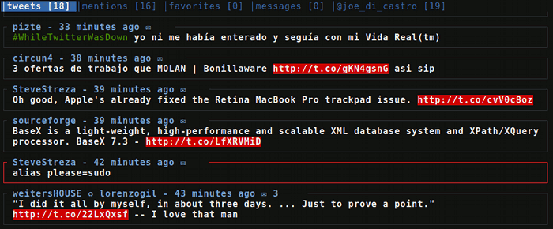
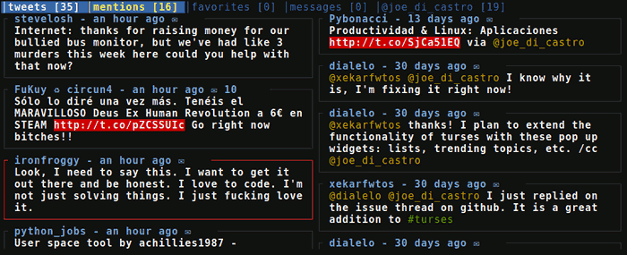
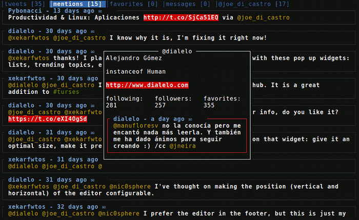

Que medio mundo parece estar conectado a Twitter no es ninguna novedad. Y que si sigues a un buen número de personas, el intentar estar al tanto de todo lo que ocurre es una temeridad, tampoco debería sorprender a nadie. De hecho, dado su éxito y el enorme flujo de información que circula por él, se han desarrollado cientos de herramientas para gestionarlo.
Desde que cree mi cuenta en twitter, he probado unas cuantas, unas veinte (y solo en Linux, en el resto uso la web). La primera, y la elección más obvia ya que por aquel entonces usaba Ubuntu, fue Gwibber . Luego cansado de sus muchos problemas, probé un sinnúmero de aplicaciones, solo merece la pena reseñar una: Hotot. Es la mejor aplicación gráfica para twitter en Linux que conozco.
Pero guiado por el mismo objetivo de mejorar la productividad en mis herramientas habituales de trabajo, me lancé a la búsqueda de un cliente de twitter que encajara en la misma filosofía. No hay muchas alternativas, la mayoría, hay que reconocerlo, son demasiado "crudas" incluso para mí, que soy un amante de la consola. Pero entonces dí con una pequeña joya, Tyrs, desarrollada por Nicolas Paris. Era una herramienta sencilla, pero que cumplía muy bien con todo lo que buscaba de ella. Pero un buen día, Nicolas, en su afán por mejorarla, empezó a reescribir la herramienta empleando una nueva librería para gestionar el interfaz. Las primeras versiones tenían varios fallos y Nicolas pronto se vio desbordado por una tarea que no le apetecía continuar y a la que no podía dedicar más tiempo. Y decidió abandonar el proyecto, con la esperanza de que alguien se atreviera a retomarlo. Cuando leí la entrada de su blog no perdí la esperanza del todo, al fin y al cabo, estaba desarrollado en Python, un lenguaje con el que me desenvuelvo. Mientras esperaba que hacer, seguí usando la última versión estable a diario. Pero entonces, apareció el milagro, Turses
Turses
Alejandro Gómez, un usuario de Tyrs se lanzó a crear su propia aplicación basándose en él. Y no solo garantizaba la continuidad del buen trabajo empezado por Nicolas, si no que llegaba lleno de ideas frescas y muchas ganas de hacerlo bien. El propio Nicolas le felicitó por el trabajo y la iniciativa. A día de hoy, el proyecto se sigue desarrollando, y aunque aún tiene algunas metas marcadas por delante, la aplicación es perfectamente usable en el día a día, de hecho es mi cliente habitual.
Como ya se habrá podido deducir, Turses es un cliente de twitter para la consola con interfaz ncurses. Está desarrollado en Python y emplea la librería Urwid para crear la interfaz en curses. Lo mejor de esta aplicación es que emplea atajos de teclado inspirados en Vim y es totalmente controlable desde el teclado. Esto unido a que emplea una interfaz basada en texto, la convierten en la aplicación más ágil de todas las que haya probado. Hotot también tiene algunas combinaciones de teclas muy útiles, pero ni se acercan a lo que Turses te permite.
Aquí se puede ver el aspecto por defecto de Turses

Pero no se acaban ahí las bondades de Turses, tiene algunas características geniales como la gestión dinámica de bufferes (líneas temporales) y de columnas. Demos un repaso a lo que nos permite la aplicación:
- Múltiples líneas temporales (bufferes). Es decir, nos permite consultar los tweets de la gente a la que seguimos, los nuestros, menciones, etc. Es decir, los bufferes habituales, incluidos conversaciones, búsquedas y hashtags. Y podemos tenerlas simultáneamente abiertas y navegar entre ellas muy fácilmente.
- Múltiples columnas. En cada columna se sitúa un buffer, y podemos añadir o quitar columnas a voluntad de forma muy sencilla. Es decir, que podemos visualizar un solo buffer de forma predefinida, o podemos ver varios a la vez distribuidos en múltiples columnas.
- Tweet, Reply, Retweet, Borrar. Vamos, que permite las operaciones habituales con los tweets. Además se puede hacer un Retweet editando el texto, algo que parece obvio, pero que en algunas aplicaciones no es tan sencillo.
- Seguir/dejar de seguir a un usuario. Podemos hacerlo bien a través de un tweet o bien introduciendo el nombre del usuario.
- Des/Marcar como favorito.
- Enviar mensajes directos.
- Abrir URLs en un navegador. Nos permite abrir las direcciones que aparecen en un tweet, así como abrir el propio tweet.
- Visualizar conversaciones. Podemos abrir un nuevo buffer con la conversación relacionada con un tweet.
- Contador de los no leídos funciona para todos los bufferes y nos permite ponerlo a cero manualmente cuando queremos ignorar algunos no leídos.
- Búsqueda. Se puede buscar tanto por usuario como por termino.
- Ver los tweets de cualquier usuario .
- Visualizar el perfil de un usuario.
- Totalmente personalizable y la configuración se guarda en un fichero de texto plano.
- Múltiples cuentas, eso sí, una por ejecución.
- Ayuda en línea con todas las combinaciones de teclas posibles. Accesible a
través de la tecla
?
Interfaz de Turses mostrando múltiples columnas

Y entre las metas que tiene marcadas su autor, nos encontramos con el soporte para listas, streaming, notificaciones emergentes y múltiples sesiones. Estoy seguro de que las acabará incorporando, le sobra capacidad. Aunque he de reseñar que actualmente he contribuido con una porción de código minúscula al proyecto y que tengo la intención de seguir colaborando en todo lo que pueda. Si eres programador Python y te apetece echar una mano, anímate, Alejandro es muy receptivo y un tío muy majo que estará encantado con toda la ayuda que le podamos dar.
Mi configuración
Si a alguien le puede servir como inspiración mi configuración, esta disponible en GitHub
Turses mostrando la información del perfil del autor de un tweet

Alternativas
Solo conozco dos alternativas en la misma línea que merezca la pena reseñar, las demás que he probado no estaban a la altura:
-
TwitVim, es un plugin para Vim. Funciona fantásticamente bien, eso sí, solo apropiado para usuarios de Vim. La probé un tiempo y me gusto, pero personalmente no me gusta emplear Vim para esta tarea y Turses es bastante más manejable.
-
TTYtter, está escrito en Perl y no tiene interfaz. Trabaja en la línea de comandos a modo de interprete. Funciona muy bien y también lo usé un tiempo, pero su propio funcionamiento le reste eficiencia comparado con Turses.